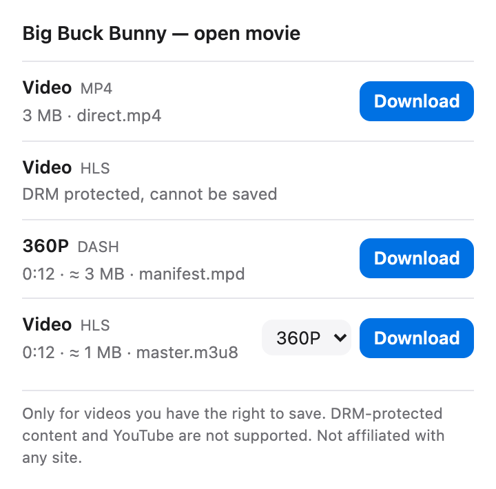

Free Chrome extension · HLS · DASH · MP4 · bilibili
Find the video.
Save the file.
Spool spots the videos a page loads and saves each one as a file. Streams are merged in your browser. No servers, no tracking.

What is Spool?
Spool is a free, open-source browser extension for Chrome and Edge that saves online video as files. While a page plays, Spool notices direct video files and HLS (m3u8) and DASH (mpd) streams. Click its icon, choose a quality and download: stream segments are fetched and merged into one MP4 in your browser, without re-encoding. On bilibili it offers every quality your own account can play. Spool has no server and collects no data.
One list. One button.
Everything a page loads, ready to save.
Direct files
MP4, WebM, MOV, MKV, FLV, MP3 and M4A, saved exactly as served.
HLS streams
Every quality in the playlist. TS or fMP4 segments, separate audio, AES-128.
DASH streams
SegmentTemplate with numbers or a timeline, SegmentList and single files.
bilibili, at your best
Every quality your signed-in account can play, up to 4K and 8K with a membership.
Any length
Writes to disk as it goes, so a two-hour film needs no more memory than a clip.
Nothing leaves your browser
No server, no account, no analytics. Only the video's own site is contacted.
What Spool will not do
Clear limits, on purpose.
DRM-protected video
Netflix, Disney+ and other Widevine, PlayReady or FairPlay content is marked as protected. Spool never touches keys or the browser's DRM.
YouTube
The Chrome Web Store does not allow YouTube downloaders, so Spool ignores YouTube entirely.
Paywalls and logins
Spool only sees what the page already loaded for you. Live streams are listed but not recorded yet.
How to download a video
Three clicks once Spool is installed.
Play the video
Open the page and start the video. The Spool icon shows how many videos it found.
Pick a quality
Click the icon. For HLS, DASH and bilibili, choose a quality from the menu.
Download
Click Download. The file goes to your Downloads folder, named after the page.
Install
Spool is not in the Chrome Web Store yet. Load it in developer mode; it takes a minute.
Get the code
Download the ZIP and unzip it, or clone the repository.
Turn on Developer mode
Open chrome://extensions (Edge: edge://extensions) and switch on Developer mode.
Load unpacked
Click Load unpacked and choose the spool folder.
Chrome, Edge and other Chromium browsers, version 116 or later.
Permissions, explained
Each one, and why.
Read network requests
To notice video responses as pages load. Only URL, type and size are kept, per tab, until it closes.
Set the Referer
Many video servers require the original page as Referer. Applied to Spool's own requests only.
Downloads and storage
Save the finished file, and keep the list and progress for this browser session.
FAQ
Common questions about Spool.
How do I download an HLS (m3u8) video in Chrome?
Install Spool, play the video, then click the Spool icon. The stream is listed with its qualities; choose one and click Download. Spool fetches the segments, decrypts AES-128 if needed and saves one MP4.
Is Spool free?
Yes. Spool is free and open source under the MIT License, with no ads, account or paid tier.
Does Spool work on YouTube?
No. The Chrome Web Store does not allow YouTube downloaders, so Spool ignores YouTube pages and their video requests.
Can Spool download Netflix or other DRM-protected video?
No. Spool recognises Widevine, PlayReady and FairPlay protection and marks those videos as protected. It never touches encryption keys or the browser's DRM system.
Does Spool collect data or upload my videos?
No. There is no Spool server. The list of found videos stays in your browser for the session, and files go straight to your Downloads folder.
How does Spool get the best quality on bilibili?
On a bilibili video page Spool asks bilibili for the stream list with your own session, the same way the player does. The quality is capped by your account; it is never unlocked.
Why is the video saved as MP4?
HLS and DASH arrive as many small segments. Spool copies them into one standard MP4 without re-encoding, so quality matches the stream and any player can open it.